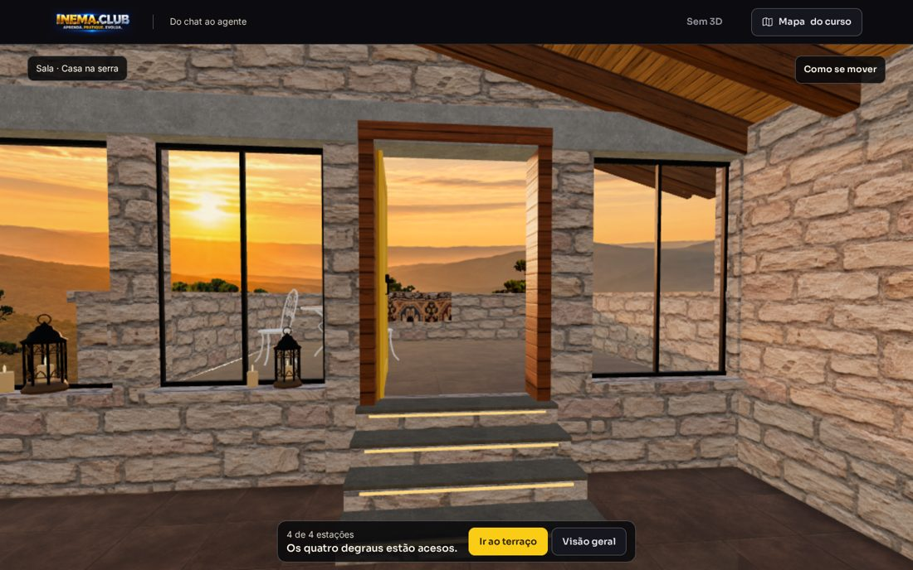
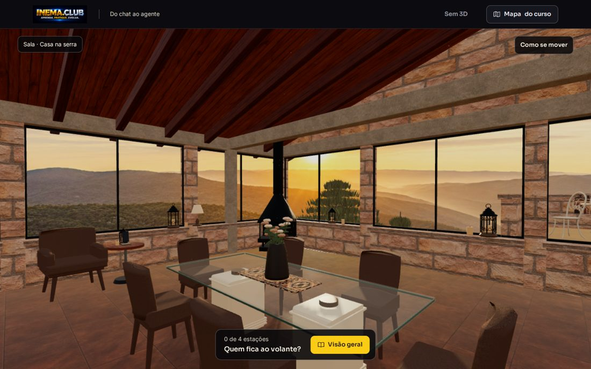
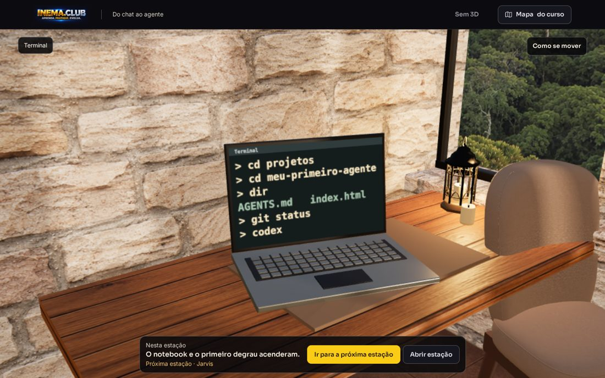
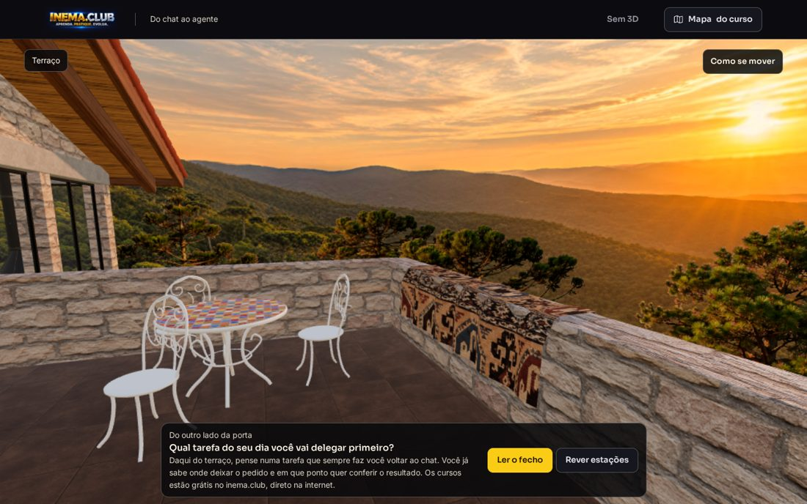

Este proyecto muestra cómo el curso "Do chat ao agente" (Del chat al agente) se convirtió en una casa 3D de piedra y madera que carga en el navegador. El curso enseña a pasar del chat a los agentes, IAs que ejecutan tareas en la computadora. Tiene 37 clases y 23 ejercicios, con una introducción y 4 partes. Esta guía es para quienes crean cursos o páginas y quieren ver un trabajo así por dentro: los pedidos hechos a las IAs, los errores y las cifras medidas. Para leerla, basta con un navegador. El curso es gratis, pero los ejercicios requieren una computadora y una suscripción a Claude o ChatGPT; algunos usan el terminal, la ventana donde se escriben comandos.
Ves el proceso, no solo el resultado
Una página terminada oculta los intentos. Este proyecto guarda lo que se pidió, lo que se obtuvo y lo que hubo que rehacer. Los registros publicados no incluyen rutas ni enlaces internos, por eso algunos pedidos difieren del texto original.
📄 Un curso en una lista
Las clases aparecen una debajo de otra.
El lugar no cambia cuando el alumno termina una parte.
🏠 El mismo curso en una casa
Cada parte tiene una estación en la sala: Terminal (comandos), Jarvis (asistente), Filas (tareas en orden) y Redes (contenido para redes sociales).
Al marcar los ejercicios de una parte, la estación se enciende y se ilumina un escalón. Cuando completas las cuatro, la puerta se abre a la terraza.
🧭 Quién hizo qué
Ves qué hizo cada IA y qué pasó por una revisión.
🔎 Qué salió mal
Los errores están en una lista, cada uno con la corrección más sencilla que encontramos.
📏 Cuánto consumió
El tiempo de trabajo de la IA en cada etapa y el uso de la suscripción están registrados.


Tres problemas que este registro ayuda a pensar
No hace falta que quieras un sitio en 3D para aprovechar lo que hay aquí.
🧗 "La página no cambia"
Hoy: el alumno termina una parte y el lugar sigue igual.
Qué puedes ver aquí: cómo cada parte se convirtió en una señal visible en la sala.
🪞 "La IA dijo que estaba listo"
Hoy: la respuesta parece correcta, pero el error solo aparece en la pantalla.
Qué puedes ver aquí: capturas de pantalla en un navegador real y lo que volvió para corregirse.
🧾 "¿Cuánto consume?"
Hoy: empiezas sin saber cuánto trabajo implica.
Qué puedes ver aquí: el tiempo de cada etapa y cuánto del límite semanal de la suscripción se usó. Las cifras cubren solo la IA que construyó el proyecto.
Cómo se detectó un error
- Una IA entrega la sala
El código funciona y la casa aparece. - Otra IA abre el sitio en un navegador real
La captura de pantalla muestra el techo rojo, muy distinto a la madera de las fotos. - El problema vuelve como pedido
La siguiente etapa ajusta los colores del techo y las vigas. - Una nueva captura lo comprueba
Muestra si el techo se parece más a la foto. Hubo que corregir el piso en más de una etapa.

Piensa en una obra con equipo, capataz e inspección
Un agente es una IA que, además de responder, ejecuta tareas en la computadora. Codex, de OpenAI, y Claude Code, de Anthropic, son agentes que escriben y modifican archivos. Aquí, cada uno tuvo un papel. Los revisores independientes son nuevas sesiones de IA, sin las notas de quienes construyeron el proyecto.
🧱 El equipo: Codex
Usó el modelo de IA GPT-6.2 Astra, con un nivel alto de esfuerzo, que le permite razonar durante más tiempo, y mediante la suscripción. Trabajó en 9 rondas: cada ronda es un pedido ejecutado de principio a fin. Generó las imágenes de las superficies y el paisaje, los textos y el código.
📐 El capataz: Claude Code
Escribió la descripción del proyecto, los pedidos y las pruebas. Revisó el sitio en el navegador e indicó lo que no funcionaba.
🔍 La inspección: revisores
Usaron el curso como visitantes, sin ver las notas de quienes construyeron el proyecto. Le dieron una nota y enumeraron problemas.
El orden del trabajo
- El pedido
Nei, de INEMA, pidió partir de un evento 3D anterior, Imersão Jarvis 3D, y recrear la casa de piedra y madera a partir de un conjunto de fotos, con el contenido de este curso. - La base del curso
Las clases y los ejercicios se guardan en un archivo común a las versiones con y sin 3D. - Imágenes, textos y casa
Codex crea el entorno y construye el curso dentro de él. - Revisión y corrección
Las capturas de pantalla y las revisiones dan origen a las siguientes rondas. - Cierre
La última ronda se revisa en el sitio publicado, con clics y teclado reales.


Las cifras y lo que salió mal
El tiempo, el costo y el límite salen del registro de cada ronda. Las notas de los revisores salen del seguimiento del proyecto, que no se publicó.
El uso medido del límite semanal de la suscripción de Codex pasó de 89 % a 96 %, es decir, 7 puntos.
Revisor 1: nota 6
Reprobado. Los problemas dieron origen a la ronda 05.
Revisor 2: nota 7
Reprobado. Los problemas dieron origen a la ronda 06.
Revisor 3: nota 7,5
Aprobado, con algunos puntos por ajustar que dieron origen a la ronda 07. Este revisor fue más flexible que los dos primeros, así que la nota no se compara directamente con las anteriores.
La última ronda se revisó en el sitio publicado, con clics y teclado reales, sin un nuevo revisor. Los informes completos no se publicaron: los puntos señalados aparecen en los pedidos de las rondas 05, 06 y 07.
Algunos errores del proceso
- Techo rojo y piso color vino
Se ajustaron los colores hasta que se parecieron más a las fotos. - Piedra que parecía ladrillo pintado y después un bloque de videojuego
Se rehízo la imagen de la pared a partir de las fotos de referencia. - Captura de prueba completamente negra
La pantalla se borraba justo después de dibujarse. - El clic quedaba atrapado en el muro bajo
Quien hacía clic en el hueco de la puerta acertaba al muro bajo de la terraza. - Aviso antes de tiempo
La barra de avisos anunciaba que la persona había llegado a la estación cuando todavía iba de camino.
lista de errores registrados está en GitHub, el sitio que guarda el código del proyecto. Está en portugués.
🔎 Revisa en GitHub
Pedidos · Respuestas de cada ronda · Capturas de pantalla · Tiempo y costo
⚠️ Lo que aún no está comprobado o listo
- La fluidez no se midió en una tarjeta gráfica real ni en un celular físico. Las pruebas simularon ambos en la computadora.
- Las sillas, el sillón y la piedra vista de cerca todavía son sencillos.
- No se midió si la casa ayuda a las personas a aprender o completar más.
- El curso es gratis, pero los ejercicios requieren una computadora y una suscripción a Claude o ChatGPT.
Lleva el análisis a tu curso
Puedes hacer el análisis sin programar ni instalar nada. Construir una casa así es otra etapa: requiere aprender a usar agentes en la computadora o contar con ayuda técnica.
1. Abre tu IA
Usa un chat de IA que pueda abrir enlaces. Si no puede abrir GitHub, copia la sección "Cómo se construyó" de la página del proyecto y pégala junto con el enlace.
2. Pega el pedido
Agrega el enlace del curso o un archivo, como un PDF o una presentación.
3. Decide
Lee el plan y di que sí solo a lo que tenga sentido.
Lee el proyecto "Do Chat ao Agente 3D" en https://github.com/inematds/do-chat-ao-agente-3d (empieza por README.es.md y FALHAS.md) y mira la casa en https://eventos.inema.club/do-chat-ao-agente-3d/. Usa este proyecto solo como referencia. Luego revisa mi curso o mi página (en el enlace o archivo que te envíe; si tienes acceso a una carpeta, revisa esa carpeta) y respóndeme en español sencillo: 1. ¿Qué partes podrían convertirse en lugares o etapas, con una señal clara de que están "listas"? 2. ¿Qué vería cambiar la persona a medida que avanza? 3. ¿Vale la pena hacerlo en 3D o basta con una página común? 4. ¿Cómo puedo revisar el resultado en un navegador real antes de aprobarlo? No cambies nada todavía. Muéstrame el plan y espera a que te diga que sí.
🛠️ ¿Quieres la parte técnica?
Los archivos, las pruebas y el paso a paso completo están en la página inicial del proyecto en GitHub.
Antes de entrar
¿Puedo hacer una casa así sin programar?
El análisis, sí. Para construirla, hay que aprender a usar agentes como Claude Code o Codex, o contar con ayuda técnica. Aquí hubo 9 rondas, con pruebas y revisiones.
¿Necesito programar para leer?
No. Esta guía y la casa cargan en el navegador. Algunos ejercicios del curso usan el terminal, y la primera estación te enseña a empezar.
¿El curso tiene costo?
El curso es gratis. Los ejercicios requieren una computadora y una suscripción a Claude o ChatGPT.
¿Y si el 3D no carga?
Hay una versión sin 3D, con el mismo curso y el mismo progreso.
¿Funciona en el celular?
La casa tiene controles táctiles y una versión sin 3D. Se probaron en una simulación, no en un celular físico. Para hacer los ejercicios, necesitas una computadora.
¿La IA hizo todo sola?
No. Nei, de INEMA, hizo el pedido y dio el visto bueno para publicar. Las IAs trabajaron en 9 rondas, con pruebas, revisión en el navegador y tres revisiones independientes.
¿Las fotos de la casa están aquí?
No. Solo sirvieron de referencia y quedaron fuera del sitio y del repositorio.
Y en tu curso: ¿qué debería ver cambiar la persona al terminar una parte? El curso es gratis en inema.club, directamente en internet.